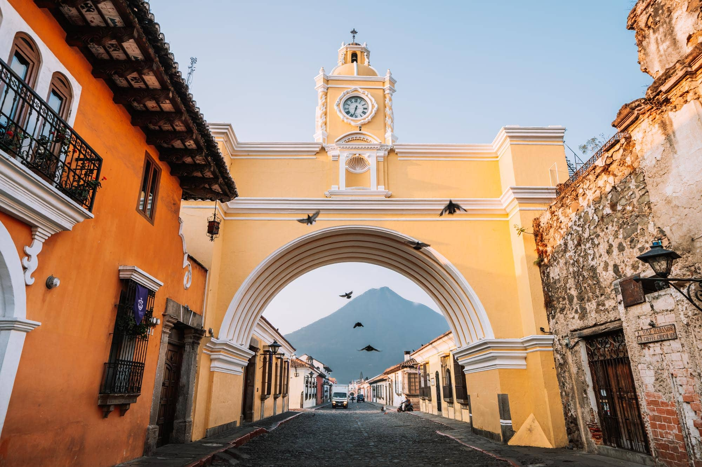
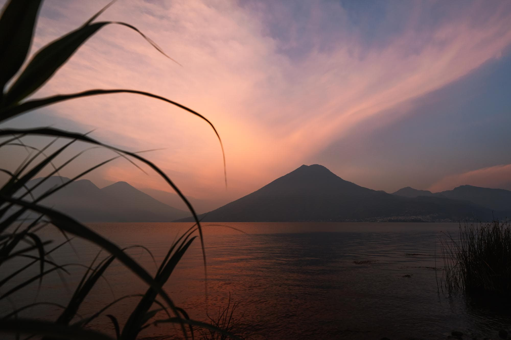
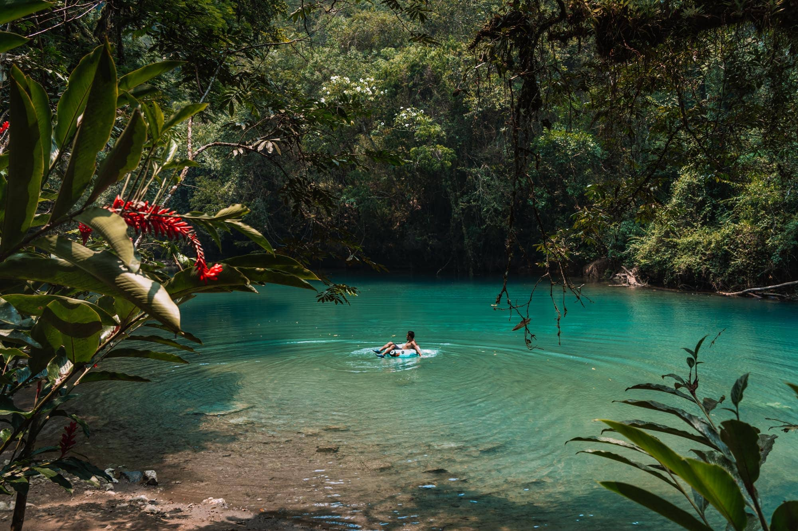
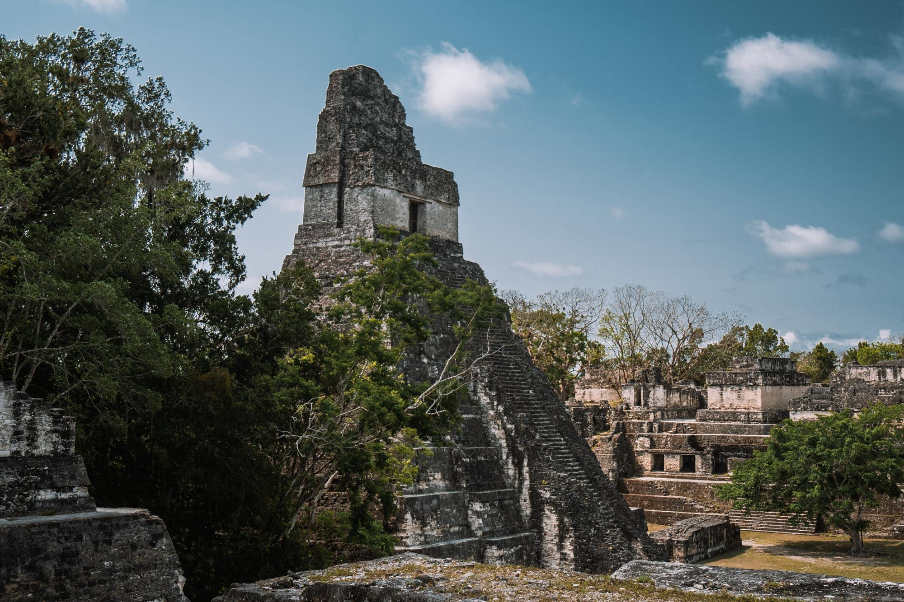
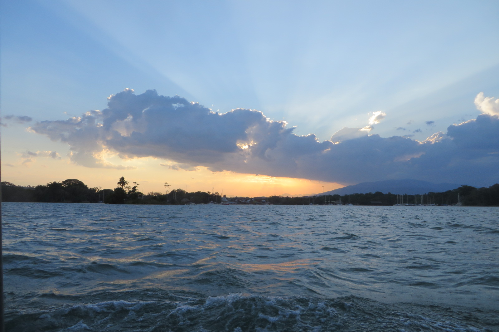

Route In Een Oogopslag
De route is vastgezet als werkvariant. Hotels die nog niet vastliggen blijven bewust als “nog te boeken” in deze one-pager; alleen L'Aurora Inn staat als bevestigd hotel vermeld.
Kaart En Route
MapLibre + OpenFreeMap. De route is indicatief; klik op een marker om naar de dagdetails te springen.
Aankomst 20:30, late transfer naar Antigua.
2AcatenangoOvernight hike met optionele Fuego push als het veilig is.
3Lake AtitlanHoofdblok voor decompressie na de vulkaan.
4Lanquin / SemucDrie nachten zodat Semuc de omweg waard is.
5El Remate / Flores / TikalTikal plus rust aan Lago Peten Itza.
6Rio DulceWater/jungle-afsluiter zonder tempels.
7L'Aurora InnLaatste airportnacht, geboekt.
Sfeerbeelden

Antigua
Lake Atitlan
Semuc Champey
Tikal
Rio DulceBooking Status
| Blok | Datums | Nachten | Status | Notitie |
|---|---|---|---|---|
| Antigua start | 23-26 jul | 3 | Nog te boeken | Late check-in en GUA-transfer nodig. |
| Acatenango basecamp | 26-27 jul | 1 | Via tour | Tour moet slaap, eten, gear en pickup/dropoff afdekken. |
| Antigua recovery | 27-28 jul | 1 | Nog te boeken | Bij voorkeur zelfde hotel als eerste Antigua-blok. |
| Lake Atitlan | 28-31 jul | 3 | Nog te boeken | Main recovery block. |
| Lanquin / Semuc | 31 jul-3 aug | 3 | Nog te boeken | Toegang tot Semuc zonder extra frictie. |
| El Remate / Flores | 3-6 aug | 3 | Nog te boeken | Comfortkandidaat na Semuc. |
| Rio Dulce | 6-8 aug | 2 | Nog te boeken | River/jungle lodge als ervaring. |
| L'Aurora Inn | 8-9 aug | 1 | Geboekt | 2 kamers, EUR 131, free cancellation; vroege shuttle bevestigen. |
Slaapvoorstellen
Eerste Booking.com-shortlist per open verblijfblok. Dit zijn nog geen keuzes; prijzen en beschikbaarheid opnieuw controleren voor boeken.
Dagplanning
Open Acties
Boek open verblijven
Antigua, Lake Atitlan, Semuc, El Remate/Flores en Rio Dulce blijven open.
Kies Acatenango-operator
Pickup, gear, eten, basecamp, Fuego-policy en weather cancellation moeten helder zijn.
Leg lange transfers vast
Vooral Atitlan naar Semuc, Semuc naar Peten en Rio Dulce naar L'Aurora Inn.
Bevestig L'Aurora shuttle
Direct met de property afstemmen voor de 06:15 vlucht op 9 augustus.